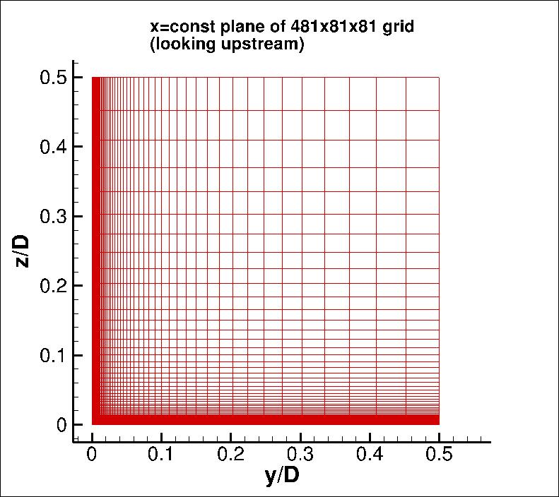

|
Langley Research CenterTurbulence Modeling Resource |
Return to: 3D Supersonic Square Duct Validation Case Intro Page
Return to: Turbulence Modeling Resource Home Page
Grids - 3D Supersonic Square Duct Case
The methodology to create a series of 3 nested 3-D grids is provided.
Each coarser grid is exactly every-other-point
of the next finer grid, ranging from 961 x 161 x 161 (fine) to 481 x 81 x 81 (medium) to 241 x 41 x 41 (coarse) grid.
The grids are built in nondimensional units, with full duct width D taken to be 1 unit. Due to use of symmetry boundary
conditions, only one quarter of the duct is computed (y and z ranges are from 0 to 0.5).
The finest grid has minimum spacing at the wall of y=8.5 x 10-6, yielding an average minimum y+ of about 0.022.
The grid is stretched in the two wall-normal directions.
The figures below show a view of one plane of the 481 x 81 x 81 grid.

Note: be sure to use double precision when reading (or writing) the grids!
STRUCTURED VERSIONS OF GRIDS
PLOT3D Files
A simple FORTRAN program (modified 7/17/2015 to correct a minor bug
in writing out the indices for the (2-D) 41x41 plane of points)
is provided that can be used to generate the 3 grids in PLOT3D format. All information has been hardwired
into the program.
Alternatively, three structured Y-Z planes are provided below.
Read these, then write your own program to duplicate the plane as appropriate in the x-direction.
Format for the structured 2D grids is PLOT3D-type, formatted, MG, 2D (nbl=1) - note that you
must use double precision when reading! :
read(2,*) nbl
read(2,*) (idim(n),jdim(n),n=1,nbl)
do n=1,nbl
read(2,*) ((y(i,j,n),i=1,idim(n)),j=1,jdim(n)),
+ ((z(i,j,n),i=1,idim(n)),j=1,jdim(n))
enddo
Download the 2-D planar grid sections in PLOT3D format here:
The 161 x 161 plane should be duplicated 961 times (961 planes in x, between x=0 and x=52 inclusive, with delta x = 0.054166666667.
The 81 x 81 plane should be duplicated 481 times (481 planes in x, between x=0 and x=52 inclusive, with delta x = 0.1083333333333.
The 41 x 41 plane should be duplicated 241 times (241 planes in x, between x=0 and x=52 inclusive, with delta x = 0.2166666666667.
If desired, example Neutral Map Files associated with 3-D version of the grids are given here (these files specify grid indices associated with each boundary condition - see The Neutral Map File):
CGNS Files
The structured grids are also available as CGNS files (3-D versions only). Note that the BCs written inside the CGNS files are for guidance only, and may not reflect the appropriate BCs needed for your application. To read/write CGNS files, (free) software may be necessary if your pre/post-processing tools do not already handle it. See: CGNS Website for details.
Download the 3-D version of the grids in CGNS format (gzipped) here:
UNSTRUCTURED VERSIONS OF GRIDS
CGNS Files
The unstructured versions of the same grids are all given as CGNS files. Note that the BCs written inside the CGNS files are for guidance only, and may not reflect the appropriate BCs needed for your application. To read/write CGNS files, (free) software may be necessary if your pre/post-processing tools do not already handle it. See: CGNS Website for details. The unstructured grids are all given as hexahedra.
Download the unstructured CGNS grids (gzipped) as 3-D hexahedra here:
Return to: 3D Supersonic Square Duct Validation Case Intro Page
Return to: Turbulence Modeling Resource Home Page
Responsible NASA Official:
Ethan Vogel
Page Curator:
Clark Pederson
Last Updated: 05/13/2019